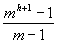

AVL Trees
A tree which is nearly as good as a balanced tree for time complexity of the operations, and which we can keep balanced as insertions and deletions proceed, is the AVL tree.
AVL trees are named after the Russian mathematicians G.M. Adel'son-Vel'skii and E.M. Landis, who discovered them in 1962.
Definition
An AVL tree is a binary search tree in which the heights of the left and right subtrees of the root differ by at most 1, and in which the left and right subtrees of the root are again AVL trees.
Examples
AVL
[AVL but not balanced]
non-AVL
In order to work out algorithms for inserting and deleting from an AVL tree, we need to associate a balance factor with each node. This is left high, right high or equal depending on if the left subtree of the node has height greater than, less than or equal to that of the right subtree.
Thus the node may be represented by:
public class AvlNode
{
public static final int LEFT_HIGH = -1;
public static final int RIGHT_HIGH = 1;
public static final int EQUAL_HIGH = 0;
Sortable data;
int balanceFactor = EQUAL_HIGH;
AvlNode left;
AvlNode right;
}
Examples
[Note that this demonstrates that AVL trees can be quite skewed]
AVL Trees
Non-AVL Tree
Insertion into an AVL tree
Consider constructing a binary search tree in the usual way from the sequence of keys 4, 7, 2, 8, 6, 1, 5, making each node with its balance factor as we go:
This shows that, in may cases, the binary search tree we build in the natural way will remain an AVL tree with no special action.
The only case in which we need to do anything special is if the new node is added to a subtree of the root that is taller than the other subtree and the new node increases the height of the subtree.
In this case we have to carry out some balancing operations in the neighbourhood of the root.
Insertion - Its effect on the balance factor
Adding to left
|
Previous |
New |
Taller |
|
LH |
leftbalance |
|
|
EH |
LH |
ü |
|
RH |
EH |
Adding to right
|
Previous |
New |
Taller |
|
LH |
EH |
|
|
EH |
RH |
ü |
|
RH |
rightbalance |
We consider the case of inserting into the right subtree (left is similar).
There are two cases to consider;
right hand subtree of root is right high after insertion, e.g.
e.g.rform a left rotation:
Perform a left rotation:
right hand subtree of root is left high after insertion:
Double rotation
When you have found the node that is out of balance, if that node and the two nodes immediately below it are in a straight line then a single rotation is needed. If the nodes lie in a dog-leg pattern, then you need a double rotation to restore the balance.
Another example based on Glenn W. Rowe "An introduction to data structures & algorithms with Java.
Build an AVL tree using the following data: 10, 20, 30, 25, 27, 7, 4
Applications of Binary Trees
Sorting
We can sort data by reading it in, item by item, and constructing a binary search tree as we go. When we have read all the data, we output it by doing in-order traversal of the tree.
If there is any possibility that the data items are nearly sorted already, it is important to use an AVL tree.
The time complexity of this method of sorting is, in general, O(nlogn + n) i.e. O(nlogn).
(But O(n2) if the input data is sorted).
It can be used to advantage when used for sorting more data than will fit into RAM.
Compiling arithmetic expressions
We can represent an arithmetic expression such as:
2 * (A + B) * (C + D) - X / Y
as a binary tree, in which the leaves are constants or variables and the nodes are operations:
A post order traversal then gives us the order in which the operations have to be carried out.
Searching operations maintaining an order
Consider the problems of counting how many times each word appears in a piece of text. Read the text and build a binary search tree in which the key is a word (order is alphabetical) and the data is the number of times it occurs.
As we meet each word, we check to see whether it's already in the tree. If it is, we add one to the data field; otherwise we insert a new node with the word as key and with the data field set to one.
(No need to use an AVL tree because the words will not occur in alphabetical order).
When we've finished, an in-order traversal allows us to print the words and their frequencies in alphabetical order.
B-trees
A B-tree of order m is an m-way tree (i.e. a tree where each node may have up to m children) in which:
A B-tree of order 5 containing 26 items
Constructing a B-tree:
Suppose we start with an empty B-tree and keys arrive in the following order:
1 12 8 2 25 5 14 28 17 7 52
16 48 68 3 26 29 53 55 45
We want to construct a B-tree of order 5.
The first four items go into the root.
To put the fifth item in the root would violate (iv). When 25 arrives, therefore, pick the middle key to make a new root.
6, 14, 28 get added to the leaf nodes.
adding 17 to a leaf node would over-fill it so we take the middle key, promote it to the root and split the leaf.
7, 52, 16, 48 get added to the leaf nodes.
Adding 68 causes us to split the right most leaf and 3 to split the left most; 26, 29, 53, 55 then go into the leaves.
Adding 45 causes a split of
and promoting 28 to the root then causes the root to split.
Maximum number of items in a B-tree of order m and height h:
|
root |
m - 1 |
|
level 1 |
m (m - 1) |
|
level 2 |
m 2(m - 1) |
|
. . . |
|
|
level h |
m h(m - 1) |
Total number of items is
(1 + m + m2 + m3 + …mh)(m - 1)
= (m - 1) = mh+1 - 1
When m = 5 and h = 2 this gives 53 - 1 = 124.
Why use B-trees
When searching tables held on disc, the cost of each disc transfer is high but doesn't depend much on the amount of data transferred.
If we use a B-tree of order 101, say, we can transfer each node in one disc read operation.
A B-tree of order 101 and height 3 can hold 1014 - 1 items (approximately 100 million) and any item can be accessed with 3 disc reads (assuming we hold the root in memory).
General Trees to Binary Trees
Conversion
Graphs
Graphs are collections of points (vertices) some pairs of which may be connected by edges. Some graphs are directed (that is we have a direction on the edges) some not.
We say that 2 vertices are adjacent if they have an edge between them. A path is a sequence of edges in which each vertex is adjacent to the next one. Two points are connected if there is a path between them. Sometimes a graph consists of separate connected components (a set of connected points). A cycle is a path that begins and ends at the same vertex and a simple cycle has no vertex (except the end visited more than once.
The graph above is an undirected graph with 2 componenets. Formally we could say about the graph, G
G= (V,E)
V= {A,B,C,D,E,F}
E={ (A,B), (B,C), (B,D), (C,D), (E,F) } //unordered pairs for undirected graphs
(A,B,C,D) is a path (B,C,D,B) is a cycle
We can talk about the adjacency set for a vertex and this leads us to an implementation of graphs. The graph above could be stored as a 2 dimensional array (this is often called an adjacency matrix):
A B C D E F
|
A |
0 |
1 |
0 |
0 |
0 |
0 |
|
B |
1 |
0 |
1 |
1 |
0 |
0 |
|
C |
0 |
1 |
0 |
1 |
0 |
0 |
|
D |
0 |
1 |
1 |
0 |
0 |
0 |
|
E |
0 |
0 |
0 |
0 |
0 |
1 |
|
F |
0 |
0 |
0 |
0 |
1 |
0 |
Notice that the array is symmetric because this is an undirected graph (en edge from A to B means that there’s one from B to A too). This is not the case for a directed graph. By summing a row we can find the degree of a vertex (number of things it’s adjacent to). The most obvious way to implement this in java is as an array, but you could use the class BitSet to represent each row. A BitSet is an ‘array’ of bits that are either set or cleared.
BitSet B = new BitSet(8); //creates a Bit Set of size 8 initially cleared (0)
B.set(4); //sets bit 4 to 1
boolean isSet=B.get(4); //checks to see if bit 4 is set
In a graph of any size you will find that most of the elements in the adjacency matrix are 0, so often a linked representation is used:
|
vertex |
degree |
adjacency list |
|
1 |
1 |
2 |
|
2 |
1 |
3 |
|
3 |
0 |
- |
|
4 |
2 |
1 3 |
Searching/Traversing a Graph
There are a few things we must bear in mind before we even consider this. The most important is that if we start at some vertex, other vertices may not be commected to it. The second is that we have to be careful about going through the same node more than once - we don’t want to get caught in a cycle.
Here’s a first (trivial) attempt from Standish:
void graphSearch(G,v) //go through G starting at v
for each w in V that is accessable from v
visit (w)
OK, so that’s pretty obvious. Let’s make it better.
First, add to each vertex an attribute that marks if we’ve visited that vertex to begin with all of these will be false.
Then for a vertex v mark it as visited and then go through its adjacency list and place each of those vertices in some kind of container C. Now, one by one take an element out of C, mark it as visited and enter all the unvisited vertices on its adjacency list into C. Keep going until C is empty.
void graphSearch(G,v)
for each x in V
x.visited=false
put v into C
while C is non-empty
get next thing from C – call it x
if !x.visited
visit (x)
x.visited=true
for each w in x’s adjacency matrix
if !w.visited
put w into C
Now, what is C?. It can be a stack or a queue. Here’s an example assuming the graph is actually a tree:
Suppose C is a stack and we start at 1. First mark all as unvisited and then put 1 in the stack
C: 1
pop 1 and visit it and then put the ones adjacent to 1 in the stack C (actually put in in other order)
C: 2 3 4
pop 2 and visit it and then put ones adjacent to it in stack C
C: 5 6 3 4
pop 5 and visit it and nothing to put in stack C
C: 6 3 4
pop 6 and visit it and nothing to push
C: 3 4
etc etc
This turns out to be a depth first search 1,2,5,6,3,4,7,8
Suppose C is a queue.
C: 1
remove 1 and then put 2 3 4 in C
C: 2 3 4
remove 2 visit and add 5 and 6
C: 3 4 5 6
remove 3 visit
remove 4 visit and add 7 8
C: 5 6 7 8
This turns out to be breadth first search 1,2,3,4,5,6,7,8